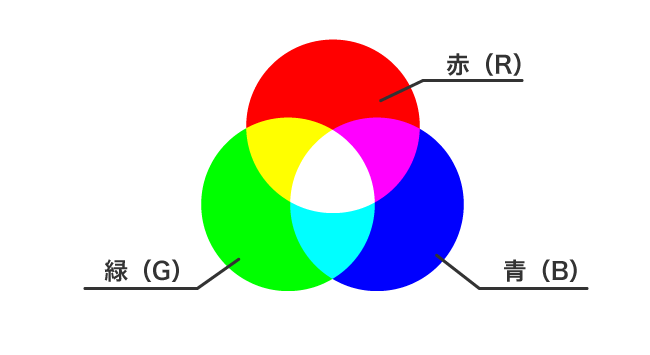
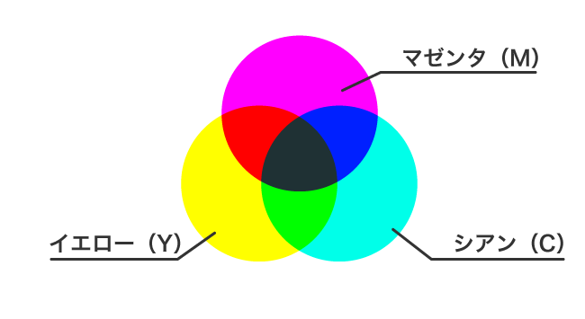
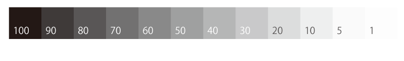

混色
色を作る方法には大きく分けて 「加法混色」と「減法混色」の２つがある
加法混色
光の三原色とも呼ばれ
R(Red)G(Green)B(Blue)の三つで構成される
光が合わさって色が構成されるので最大値は白になる
ディスプレイを通してみるものはこれを使う

減法混色
色の三原色ともよれ
C(Cyan)M(Magenta)Y(Yellow)の三つで構成される
色が重なって構成されるので最大値は黒に近い色になる
ポスターやチラシ等の印刷物でつかうのはこっち

三属性
色には性質があり、それらを彩度・明度・色相の ３つに分けたものを色の三属性という
色相(Hue)
色を組み分けしていくときに赤み・青み…など色味の性質で分けていきます
これを色相と呼びます
色相を赤⇒橙⇒黄⇒緑⇒青⇒藍⇒青紫の順に変化した色相を輪にしたものを色相環と呼びます（右参照）
色相環上で対角線上にある色同士を補色と呼ぶ
明度(Lightnss)
同じ色でも明るい色や暗い色が存在します
それを明度と呼びます
明度違いを表すときは明るいものを「高明度」中間のものを「中明度」暗いものを「低明度」と表します
明度を測るにはグレイスケール(下記参照)を用いて同じ明るさを調べる

彩度(Saturation)
同じ色でも鮮やかな色やくすんだ色が存在します。それを彩度と呼びます。
彩度の違いを表すときは明るいものを「高彩度」中間のものを「中彩度」暗いものを「低彩度」彩度がないものを「無彩色」と表します
無彩色の反対に彩度があるもの全体をさして有彩色とも呼びます
有彩色はさらに「純色」「明清色」「暗清色」「中間色」に分類できます
純色…「赤」や「青」のように有彩色でも最も彩度の高い色を指します
明清色…純色だけに「白」を加えたものを指します
明暗色…純色だけに「黒」を加えたものを指します
中間色…純色に「灰色」を加えだものを指します
トーン
同じようなイメージを持つ 明度・彩度の領域をトーン又は色調と呼びます
「明るい色」「暗い色」「薄うい色」「濃い色」「鮮やかな色」「濁った色」などその色の持つ印象は色相が違っても同じような印象を持つものがあります
色の持つ印象は彩度・明度が似ていれば共通しているのです
明度と彩度を複合して捉えた概念として、色相ごとに分類して有彩色１２トーン・無彩色５トーンに分類してあり各トーンごとに記号があります（下記参照）

{kind=link}
{kind=link}
ウェブセーフティーカラー
閲覧環境に依存しない216色をWEBセーフカラーといいます
ユーザーの閲覧環境によっては、制作者の指定した色が変換されて表示されてしまう可能性がありますが
WEBセーフカラーを使用することでそのリスクを低くすることができます。 安心して使用できるセーフなカラーというわけです。
ユニバーサルカラー
色覚異常者に情報が伝わるように配慮した色
トイレの男女の標識や信号き等、日常生活の情報を無意識に色に頼って判断しています。しかし色の見え方は誰しも同じとは限りません
色盲や色弱の様な色覚異常の方が不都合なく見えるように考えられたカラーを指します